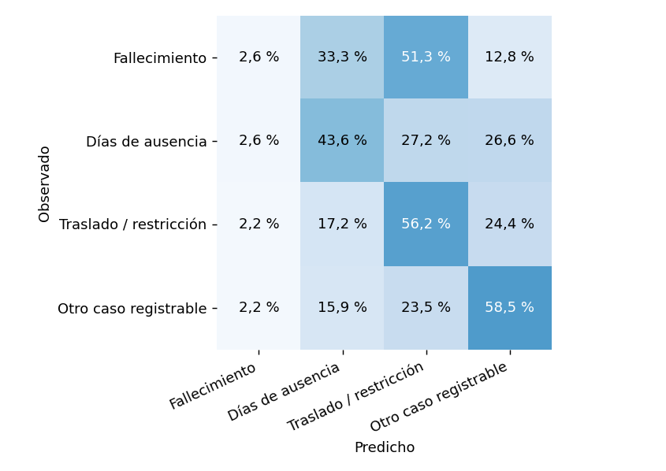

4. Modelos base#
4.1 Qué se entrenó#
Modelo: regresión logística multinomial (
LogisticRegression, penalización L2 con C = 1,class_weight='balanced', solvernewton-cg, semilla 42). Sin búsqueda de hiperparámetros.Línea base trivial:
DummyClassifier(strategy='prior'), que responde siempre la clase más frecuente.Pipeline (todo se ajusta solo con el desarrollo): preparación de variables → imputación con la categoría «Unknown» → one-hot (1.433 columnas) → regresión logística. No hay escalado (todas las columnas son 0/1) ni eliminación de atípicos.
Relación n/p: 269.516 filas y 1.433 columnas después del one-hot, unas 188 filas por columna.
Por qué logística: el objetivo es categórico. El SVR lineal es de regresión y no aplica.
4.2 Resultado en la prueba#
La prueba son los 127.391 casos de octubre a diciembre en establecimientos que el modelo nunca vio. Los intervalos son del 95 % por bootstrap de establecimientos completos (1.000 réplicas; 200 para el AUC).
Métrica |
Regresión logística [IC 95 %] |
Dummy [IC 95 %] |
|---|---|---|
Accuracy |
0,524 [0,518 – 0,530] |
0,362 [0,356 – 0,369] |
Balanced accuracy |
0,402 [0,392 – 0,416] |
0,250 [0,250 – 0,250] |
Macro F1 score |
0,397 [0,392 – 0,402] |
0,133 [0,131 – 0,135] |
Macro AUC (one-vs-rest) |
0,693 [0,671 – 0,715] |
0,500 [0,500 – 0,500] |
Interpretación.
La logística supera a la línea base en las cuatro métricas y los intervalos no se solapan. Por ejemplo, la diferencia en balanced accuracy es 0,152 (IC 95 % 0,142 a 0,166).
El nivel es moderado: acierta el 52 % de los casos. Un accuracy tan por debajo del 80–90 % no es señal de fuga de información (el enunciado pide revisarla solo si es alta), y el accuracy supera con claridad al 36 % de la clase mayoritaria.
Los intervalos solo cubren la variación entre establecimientos de este trimestre. No incluyen la incertidumbre del entrenamiento ni choques comunes del calendario.
4.3 Resultado por clase#
Resultado |
Precision |
Recall |
F1 score |
Casos en prueba |
|---|---|---|---|---|
Fallecimiento (Death) |
0,000 |
0,026 |
0,001 |
39 |
Días de ausencia |
0,600 |
0,436 |
0,505 |
46.169 |
Traslado / restricción |
0,478 |
0,562 |
0,516 |
37.231 |
Otro caso registrable |
0,546 |
0,585 |
0,564 |
43.952 |
Interpretación. Las tres clases frecuentes tienen F1 score entre 0,505 y 0,564. Fallecimiento casi no se detecta: el modelo identifica 1 de 39 casos (recall 2,6 %; intervalo de Wilson del 95 %: 0,5 % a 13,2 %) y su precision es de 0,03 %. Con 39 casos, cada uno en un establecimiento distinto, no se puede afirmar nada fiable sobre esa clase.
4.4 Matriz de confusión#


Figura 6 Matriz de confusión de la regresión logística en la prueba (cada fila suma 100 % de la clase real).#
Interpretación. La diagonal de las tres clases frecuentes está entre 43,6 % y 58,5 %, y el resto se reparte sobre todo entre esas mismas tres clases. El modelo separa mejor «otro caso registrable» (58,5 %) y «traslado / restricción» (56,2 %) que «días de ausencia» (43,6 %). El Dummy manda todos los casos a «días de ausencia» (recall 100 % en esa clase y 0 % en las demás). Más de la mitad de los fallecimientos reales (51,3 %) se clasifican como «traslado / restricción».
4.5 Curvas ROC y Precision-Recall#

Figura 7 Curvas ROC (una clase contra las otras tres) y Precision-Recall de la regresión logística.#
Interpretación. Los AUC de las tres clases frecuentes van de 0,70 a 0,73. Fallecimiento tiene 0,61 con una curva muy irregular: son 39 casos. En la curva Precision-Recall, la línea de base de cada clase es su proporción de casos (0,36; 0,29 y 0,35); la logística la supera, pero con margen modesto. Para Fallecimiento el AP es 0,0005 frente a una prevalencia de 0,0003.
4.6 Validación cronológica y por establecimiento#
Se probaron tres ventanas hacia adelante dentro del desarrollo (entrenar antes de abril y validar abril–mayo; antes de junio y validar junio–julio; antes de agosto y validar agosto–septiembre), siempre con establecimientos distintos y 7 días de purga.
Modelo |
Pliegue |
Accuracy |
Balanced accuracy |
Macro F1 score |
Macro AUC |
|---|---|---|---|---|---|
LogisticRegression |
1 |
0,505 |
0,380 |
0,375 |
0,762 |
DummyClassifier |
1 |
0,337 |
0,250 |
0,126 |
0,500 |
LogisticRegression |
2 |
0,506 |
0,383 |
0,379 |
0,629 |
DummyClassifier |
2 |
0,353 |
0,250 |
0,130 |
0,500 |
LogisticRegression |
3 |
0,519 |
0,392 |
0,391 |
0,687 |
DummyClassifier |
3 |
0,357 |
0,250 |
0,132 |
0,500 |
Interpretación. El balanced accuracy de la logística es estable entre pliegues (media 0,385; desviación 0,006) y siempre mejora a la línea base (0,25). El macro AUC varía más (0,629 a 0,762). Es una inferencia, no comprobada, que esto se deba a que cada pliegue tiene solo 1 a 8 fallecimientos y esa clase pesa un cuarto en el promedio. Las desviaciones entre pliegues no son intervalos de confianza.
4.7 Curva de aprendizaje#

Figura 8 Balanced accuracy con el 25 %, 50 % y 100 % de los establecimientos de cada entrenamiento.#
Interpretación. La validación casi no mejora al triplicar los datos (de 0,377 a 0,385) y la distancia con el entrenamiento (cerca de 0,28) no se cierra. Con estos 8 predictores y un modelo lineal, más casos no parecen cambiar el resultado. La brecha de balanced accuracy probablemente se debe en buena parte a Fallecimiento, que con muy pocos casos el modelo ajusta bien en el entrenamiento y no generaliza (inferencia, no comprobada). La brecha de accuracy simple es mucho menor (0,54 frente a 0,51).
4.8 Calibración#
Las probabilidades salen de un modelo con clases ponderadas, así que pueden sobreestimar las clases raras respecto de su frecuencia real (las curvas de calibración están en el anexo). El Brier multiclase es 0,583 (Dummy: 0,664) y la pérdida logarítmica es 1,001 (Dummy: 1,097); menor es mejor. No se recalibró nada con la prueba.
4.9 Qué dicen los coeficientes#
Se comparan dos categorías del mismo predictor con todo lo demás fijo, siempre contra la clase «otro caso registrable». El número es una razón de posibilidades relativa dentro del modelo: 1 significa sin diferencia; 2, el doble de posibilidades.
Comparación |
Fallecimiento |
Días de ausencia |
Traslado / restricción |
|---|---|---|---|
Enfermedad respiratoria frente a lesión |
44,80 |
18,86 |
0,32 |
Pérdida auditiva frente a lesión |
0,002 |
0,14 |
0,14 |
Enfermería profesional frente a movimiento manual de materiales |
0,027 |
0,48 |
0,54 |
Hospitales generales frente a almacenamiento general |
1,57 |
0,20 |
0,11 |
Interpretación. Frente a una lesión, una enfermedad respiratoria se asocia dentro del modelo con muchas más posibilidades de terminar en días de ausencia que en «otro caso registrable» (18,9 veces) y con menos de terminar en traslado o restricción (0,32). Para ocupaciones y sectores, enfermería y hospitales tienden hacia «otro caso registrable» y se alejan de los días de ausencia y de la restricción. Son asociaciones, no efectos causales: pueden reflejar mezcla de ocupaciones, confusión y prácticas de reporte. Los coeficientes de Fallecimiento son inestables (solo 69 casos de entrenamiento) y las cifras de esa columna no se interpretan.
4.10 Por sector#
Se evaluó por separado cada uno de los 12 sectores con al menos 1.000 casos en el desarrollo (criterio fijado sin mirar la prueba). El accuracy de la logística va de 0,33 en servicios administrativos y de apoyo (sector 56) a 0,62 en salud y asistencia social (sector 62). La logística supera al Dummy en 10 de los 12, pero no en todos: en agricultura (sector 11) queda por debajo (0,361 frente a 0,384), en servicios administrativos y de apoyo también (0,330 frente a 0,364), y en construcción (sector 23) están prácticamente empatados (0,338 frente a 0,334). Como el accuracy del Dummy cambia con la mezcla de clases de cada sector (de 0,25 a 0,40), estas comparaciones se leen con cuidado. No son un ranking de seguridad de los sectores.